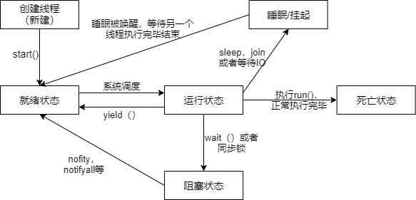

概述
深感自己的能力的不足，此处仅仅是对知识的记录和总结，许多地方都是借鉴他人的语句
线程与进程的区别
想要了解线程，必须首先知道进程，并知道他与线程的区别是什么？
进程
通常，我们把一个程序的执行称为一个进程。反过来讲，进程用于描述程序的执行过程。因此，程序和进程是一对概念，它们分別描述了一个程序的静态和动态特征：除此之外，进程还操作系统进行资源分配的一个基本单位。
进程的衍生
进程使用fork（）系统调用来创建。父进程调用fork创建子进程。每个子进程都是源自它的父进程的一个副本，它会获得父进程的数据段、堆和栈的副本，并与父进程共享代码段。每一份副本都是独立的，子进程对属于它的副本的修改对其父进程和兄弟进程（同父进程）都是不可见的，反之亦然。全盘复制父进程的数据是一种相当低效的做法。 Linux操作系统内核使用写时复制（Copy on Write,常简称为COW，也就是只有进程空间的各段的内容要发生变化时，才会将父进程的内容复制一份给子进程)等技术来提高进程创建的效率。当然，刚创建的子进程也可以通过系统调用exec把一个新的程序加载到自己的内存中，而原先在内存中的数据段、堆、栈以及代码段就会被替换掉，在这之后，子进程执行的就会是那个刚刚加载进来的新程序（意思就是当传入的参数或者变量不同的时候，子进程就相当于在做自己的事情）。
父进程被如果优先于子进程结束，那么子进程就会被原来父进程的父进程“收养”（也就是子进程的爷爷）。
为了管理进程，内核必须对每个进程的数据和行为进行详细的记录，包括进程的优先级、状态、虚拟地址范围以及各种访问权限等等。更具体地说，这些信息都会被记在每个进程的进程描述符中。进程描述符并不是一个简单的符号，而是一个非常复杂的数据结构。保存在进程描述符中的进程ID (常称为PID )是进程在操作系统中的唯一标识，其中进程ID为1的进程就是之前提到的内核启动进程。进程id是一个非负整数且总是顺序的编号，新创建的进程ID总是前一个进程ID递增的结果。此外，进程ID也可以重复使用。当进程ID达到其最大限值时，内核会从头开始查找闲置的进程ID并使用M先找到的那一个作为新进程的ID。另外，进程描述符中还会包含当前进程的父进程的ID (常称为PPID )。
进程通信
进程通信叫做IPC(Inter-Process Communication)，Linux中通信的方式大致可分成三种：
- 基于通信的IPC
- 基于信号的IPC
- 基于同步的IPC
通信IPC
- 以数据为传送手段的IPC
管道(pipe)：用于传输字节流
消息队列(message queue)：用来传输结构化的对象
- 以共享内存为手段的IPC
共享内存区（share memory)：最快的IPC方法
信号IPC
操作系统的信号（signal）机制：唯一一种异步IPC方法。通过kill -l查看。
同步IPC
信号量（semaphore）
线程
线程可以视为进程中的控制流。一个进程至少包含一个线程，因为其他至少会有一个控制流持续运行。因而，一个进程的第一个线程会随着这个进程的启动而创建，这个线程被称为该进程的主线程。当然，一个进程可以包含多个线程。这些线程都是由当前线程中已经存在的线程创建出来的，创建的方法就是系统调用（pthread_create）。拥有多个线程的进程可以并发执行多个任务，并且即时某个或某些任务被阻塞，也不会影响其他任务执行，这可以大大改善程序的响应时间和吞吐量。另一方面，线程不可能独立于进程存在。它的生命周期不可能逾越所属进程的生命周期。
一个进程中的所有线程都拥有自己线程栈，并以此存储自己的私有数据。这些线程的线程栈都包含在其所属进程的虚拟内存地址中。不过要注意，一个进程中的很多资源都会被其中的所有线程共享，这些被线程共享的资源包含当前进程所持有文件描述符，等等。正因为如此，同一个进程的多个线程运行的一定是同一个程序，只不过具体的控制流程的执行函数可能有所不同。在同一个进程的多个线程之间共享数据也是一件非常轻松和自然的事情。另外，创建一个新线程，也不会像创建一个新进程那样耗时费力，因为在其所属进程的虚拟内存地址中存储的代码、数据和资源都不需要被复制。
和进程一样，每个线程都有自己的ID（由内核分配），叫做线程ID或者TID。但是在操作系统范围内不唯一，在所属进程的范围内唯一。
多线程的三大特性
原子性
原子性是指一个操作是不可中断的。即使是在多个线程一起执行的时候，一个人操作一旦开始，就不会被其他的线程干扰。
可见性（Visibility）
可见性是指当一个线程修改了某一个共享变量的值，其他线程是否能够立即知道这个修改。显然，对于串行程序来说，可见性问题是不存在的。因为你在任何一个操作步骤中修改了某个变量，那么在后续的步骤中，读取这个变量的值，一定是修改后的新值。
有序性（Ordering）
有序性问题是三个问题中最难理解的。对于一个线程的执行代码而言，我们总是习惯地认为代码的执行是从先往后，依次执行。这么理解也不是说完全错误，因为就一个线程内而言，确实会表现成这样。但是，在并发时，程序的执行可能就会出现乱序。给人直观的感觉就是：写在前面的代码，会在后面执行。然而有序性的问题的原因因为是程序在执行时，可能会进行指令重排，重排后的指令与原指令的顺序未必一致。
线程的生命周期
五种状态
在线程的生命周期中，它要经过新建(New)、就绪（Runnable）、运行（Running）、阻塞(Blocked)和死亡(Dead)5种状态。尤其是当线程启动以后，它不可能一直”霸占”着CPU独自运行，所以CPU需要在多条线程之间切换，于是线程状态也会多次在运行、阻塞之间切换

- 新建状态，当程序使用new关键字创建了一个线程之后，该线程就处于新建状态，此时仅由JVM为其分配内存，并初始化其成员变量的值
- 就绪状态，当线程对象调用了start()方法之后，该线程处于就绪状态。Java虚拟机会为其创建方法调用栈和程序计数器，等待调度运行
- 运行状态，如果处于就绪状态的线程获得了CPU，开始执行run()方法的线程执行体，则该线程处于运行状态
- 阻塞状态，当处于运行状态的线程失去所占用资源之后，便进入阻塞状态
- 死亡状态，线程终止
终止线程
线程可以通过多种方式来终结同一个进程中的其他线程。其他一种方式就是调用系统调用pthread_cancel，其作用是取消掉给定线程ID代表的那个线程。更确切地讲，它会向目标线程发送一个请求，要求它立刻终止执行。但是该函数只是发送请求并即可返回。但是，该函数只是发送请求并立刻返回，而不会等待目标线程对该请求做出响应。至于目标线程什么时候对此做出线程、怎么样的响应，则取决与另外的因素（比如线程目标的取消状态及类型）。在默认情况下，目标线程总是会接受线程取消请求，不过等到时机成熟（执行到某个取消点）的时候，目标线程才会响应线程的取消请求。
连接已终止的线程
此操作由系统调用pthread_join来执行，该函数会一直等待与给定的线程ID对应的那个线程终止，并把线程执行的pthread_create函数的返回值告知调用线程。如果目标线程已经处于终止状态，那么该函数会立即返回。这就像是把调用线程放置在了目标线程的后面，当目标线程把线程控制权交出时，调用线程会接过流程控制权并继续执行pthread_join函数调用之后的代码。这也把这一操作称为连接的缘由之一。实际上，如果一个线程可被连接，那么在它终止之前就必须连接，否则就会变成一个僵尸线程。僵尸线程不但会导致系统资源浪费，还会无意义减少其进程的可创建线程数量。
分离线程
将一个线程分离后那么它将变得不可连接。而在默认情况下，一个线程总是可以被连接的。分离操作的另一个作用是让操作系统内核在目标线程终止时自行进行清理和销毁工作。注意，分离操作是不可逆的。也就是说，我们无法使一个不可连接的线程变回可连接的状态。不过，对于一个已处于分离状态的线程，执行终止操作仍然会起作用。分离操作由系统调用pthread_detach来执行，它接受一个代表了线程ID的参数值。
一个线程对自身也可以进行两种控制：终止和分离。线程终止自身的方式有很多种。在线程执行的start函数中执行return语句，会使该线程随着start函数的结束而终止。需要注意的是，如果在主线程中执行了return语句，那么当前进程中的所有线程都会终止。另外，在任意线程中调用系统调用exit也会达到这种效果。还有一种终止自身的方式就是显示调用pthread_exit。而分离pthread_detach函数则是传入自己的TID。
创建线程
主线程在其所属进程启动时创建。其他线程可以通过别的线程用pthread_create来创建——要传入新线程将要执行的函数以及传入该函数的参数值。在创建成功的时候，该函数会返回线程的TID。
创建线程的方式
线程创建的方式有三种，在我至今使用的经历中从来没有使用到过第三种方法：所以今天只介绍两种，第一种是继承Thread类，第二种是实现Runnable接口。两种方法的优缺点就和继承和接口优缺点有关了，其实底层都是一样的。
具体的代码这里不再进行详述，基本上都是见过的。
线程同步的方式
在多个线程之间交换线程是非常简单和自然的事，而在多个进程之间只能通过一些额外的手段（比如管道、消息队列、信号量和共享内存区）传递数据。显然，使用这些额外手段会增加开发成本。不过，线程间交换数据虽然简单但却由于可能发生竞态条件而不得不使用一些同步工具（比如互斥量和条件变量）加以保护。这些与业务逻辑无关的代码会增加程序的复杂度，尤其在使用不当的情况下还会引起灾难。
互斥量可以理解为我们常见的锁。而条件变量所做的就是保证线程间共享的数据状态改变时通知到其他因此而被阻塞的线程。条件变量总是与互斥量组合使用。当线程成功锁定互斥量并访问到共享数据时，共享数据的状态并不一定满足它的要求。
锁
synchronized
使用synchronize的可以加载方法，代码块，类上，以此实现多线同步。
- 同步代码块：
即有synchronized关键字修饰的语句块。 被该关键字修饰的语句块会自动被加上内置锁，从而实现同步
1 | 代码如： |
- 同步方法
即有synchronized关键字修饰的方法。 由于java的每个对象都有一个内置锁，当用此关键字修饰方法时， 内置锁会保护整个方法。在调用该方法前，需要获得内置锁，否则就处于阻塞状态。
1 | 代码如： |
注： synchronized关键字也可以修饰静态方法，此时如果调用该静态方法，将会锁住整个类
volatile
使用volatile修饰共享变量可以实现线程同步。其中的原理与synchronized区别会在JMM文章中讲到。
a.volatile关键字为域变量的访问提供了一种免锁机制，
b.使用volatile修饰域相当于告诉虚拟机该域可能会被其他线程更新，
c.因此每次使用该域就要重新计算，而不是使用寄存器中的值
d.volatile不会提供任何原子操作，它也不能用来修饰final类型的变量
重入锁
什么是重入呢？它是表示当一个线程试图获取一个它已经获取的锁时，这个获取动作就自动成功，这是对锁获取粒度的一个概念，也就是锁持有的是以线程为单位而不是基于调用次数。
再入锁可以设置公平性(fairness)，我们可以创建重入锁时选择是否是公平的。
ReentrantLock类是可重入、互斥、实现了Lock接口的锁， 它与使用synchronized方法和快具有相同的基本行为和语义，并且扩展了其能力。
ReentrantLock相比synchronize，因为可以像普通对象一样使用，所以可以利用其提供的各种便利方法，进行精细的同步操作。
1 | class Bank { |
ReenreantLock类的常用方法有：
ReentrantLock() : 创建一个ReentrantLock实例
lock() : 获得锁
unlock() : 释放锁
从性能的角度，synchronize早起的实现比较低效，对比ReentrantLock大多数场景性能都相差较大，但是在java6 中对其进行了非常多的改进，在高竞争情况下ReentrantLock仍然有一定优势。
条件变量
与互斥锁不同，条件变量是用来等待而不是用来上锁的。条件变量用来自动阻塞一个线程，直到某特殊情况发生为止。通常条件变量和互斥锁同时使用。条件变量分为两部分:条件和变量。条件本身是由互斥量保护的。线程在改变条件状态前先要锁住互斥量。条件变量使我们可以睡眠等待某种条件出现。条件变量是利用线程间共享的全局变量进行同步的一种机制，主要包括两个动作：一个线程等待”条件变量的条件成立”而挂起；另一个线程使”条件成立”（给出条件成立信号）。条件的检测是在互斥锁的保护下进行的。如果一个条件为假，一个线程自动阻塞，并释放等待状态改变的互斥锁。如果另一个线程改变了条件，它发信号给关联的条件变量，唤醒一个或多个等待它的线程，重新获得互斥锁，重新评价条件。如果两进程共享可读写的内存，条件变量可以被用来实现这两进程间的线程同步。
局部变量
如果使用ThreadLocal管理变量，则每一个使用该变量的线程都获得该变量的副本，
副本之间相互独立，这样每一个线程都可以随意修改自己的变量副本，而不会对其他线程产生影响。
ThreadLocal 类的常用方法
ThreadLocal() : 创建一个线程本地变量 get() : 返回此线程局部变量的当前线程副本中的值
initialValue() : 返回此线程局部变量的当前线程的”初始值”
set(T value) :将此线程局部变量的当前线程副本中的值设置为value
1 | public class Bank{ |
ThreadLocal下面单独讲
ThreadLocal
一句话概括：Synchronized用于线程间的数据共享，而ThreadLocal则用于线程间的数据隔离。所以ThreadLocal的应用场合，最适合的是按线程多实例（每个线程对应一个实例）的对象的访问，并且这个对象很多地方都要用到。
数据隔离的秘诀其实是这样的，Thread有个TheadLocalMap类型的属性，叫做threadLocals，该属性用来保存该线程本地变量。这样每个线程都有自己的数据，就做到了不同线程间数据的隔离，保证了数据安全。
有点累这部分暂时留着：有问题看这篇博客：
https://blog.csdn.net/lufeng20/article/details/24314381
基本概念
并发（Concurrency）和并行（Parallelism）
并发和并行往往被人所混淆。它们都可以表示两个或多个任务一起执行，但是偏重点有些不同。并发偏重于多个任务交替执行，而多个任务有可能还是串行。而并行则是真正意义上的“同时执行”。
严格来说，并行的多个任务是真实的同时执行，而对并发来说，这个过程这是交替的，一会儿运行任务A一会儿执行任务B，系统会不停地在两者间切换。但对于外部观察者来说，即使多个任务之间是串行并发的，也会造成多任务间是并行执行的错觉。
临界区
临界区(criticalsection)用来表示一种公共资源或者共享数据，可以被多个线程使用。但是每一次，只有一个线程可以使它，一旦临界区资源被占用，其他线程要想使用资源，就必须等待，即串行化访问或执行。
死锁（DeadLock）、饥饿（Starvation）和活锁（Livelock）
死锁、饥饿和活锁都属于多线程的活跃性问题，如果发生上述情况，那么相关线程可能就不再活跃，也就是说它可能很难继续往下执行了。
死锁应该是最糟糕的一种情况了，虽然别的情况也没有好到哪儿去。
- 死锁：多个线程互相等待多方释放资源而一直没有执行。
- 饥饿：一个或多个线程因为种种原因无法获取所得的需要资源，导致一直无法执行。导致的原因往往是当前线程优先级不高导致没有资源，或某线程一直占着关键资源不放。
- 活锁：多个线程都释放资源给别的线程使用，导致没有线程拿到资源而正常执行。
阻塞和非阻塞
描述的是用户线程调用内核 I/O 操作的方式：
- 阻塞（Blocking）是指 I/O 操作需要彻底完成后才返回到用户空间；
- 非阻塞（Non-Blocking）是指 I/O 操作被调用后立即返回给用户一个状态值，无需等到 I/O 操作彻底完成。
一个 I/O 操作其实分成了两个步骤：
- 发起 I/O 请求
- 实际的 I/O 操作。
阻塞 I/O 和非阻塞 I/O 的区别在于第一步，发起 I/O 请求是否会被阻塞。如果阻塞直到完成那么就是传统的阻塞 I/O，如果不阻塞，那么就是非阻塞 I/O 。 同步 I/O 和异步 I/O 的区别就在于第二个步骤是否阻塞，如果实际的 I/O 读写阻塞请求进程，那么就是同步 I/O 。